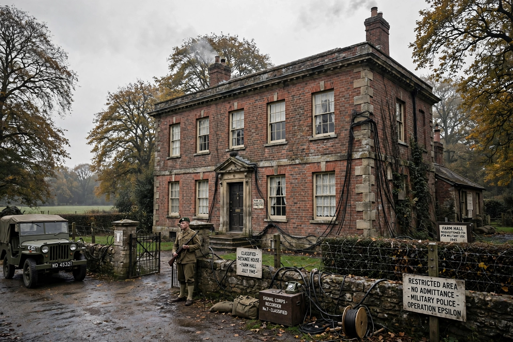

Operation Epsilon was the codename for the British detention, from July to December 1945, of ten German nuclear scientists at Farm Hall, a country house in Godmanchester, Cambridgeshire. Unbeknownst to them, their conversations were recorded with hidden microphones (Operation Epsilon was part of the wider Alsos Mission intelligence effort) in order to determine how close the German nuclear weapons programme had come to building an atomic bomb.
| Operation Epsilon | |
|---|---|
 Farm Hall, Godmanchester | |
| Location | Farm Hall, Godmanchester, England |
| Dates | 3 July 1945 – 3 January 1946 |
| Detainees | 10 German nuclear scientists |
The ten scientists were Erich Bagge, Kurt Diebner, Walther Gerlach, Otto Hahn, Paul Harteck, Werner Heisenberg, Horst Korsching, Max von Laue, Carl Friedrich von Weizsäcker and Karl Wirtz. They had been rounded up by the Alsos Mission in Germany and France in spring 1945.
The most famous recordings capture the scientists' reaction on 6 August 1945 to news of the bombing of Hiroshima. Heisenberg initially doubted the report, then — over the following days and in an impromptu lecture to his colleagues — worked out essentially the physics of the bomb, estimating its critical mass. The transcripts also record discussions of the German wartime programme's failures, mutual recriminations, and von Weizsäcker's claim that German scientists had not truly wanted to build a bomb for Hitler — the so-called Lesart ("version"), which historians have treated sceptically.
The scientists were returned to Germany in January 1946. The Farm Hall transcripts were declassified and released in 1992, generating renewed debate, books, and stage and television dramatisations. They remain a unique primary source on the German programme and on the moral self-understanding of its participants.